비가 유출로 이어지는 과정
공간 강우, 침투, 지표·지표하 유출과 흐름추적.
기능 살펴보기 →K-WATER · DISTRIBUTED HYDROLOGY
분포형 강우–유출모형 K-DRUM
강우와 지형, 토양의 공간적 차이를 반영해 유역의 저장과 유출을 해석합니다.

모형의 전체 구성과 주요 기능을 소개 영상, 발표자료와 18개 기능 이미지로 살펴보세요.
영상은 자연계의 물순환을 설명하는 개념영상이며 실제 수치모의 결과는 아닙니다.
모형 전체 개요 읽기 →공간 강우, 침투, 지표·지표하 유출과 흐름추적.
기능 살펴보기 →토양수분, 증발산, 적설·융설과 장기 물수지.
기능 살펴보기 →하천망과 구조물, 하천–범람원 교환으로 확장.
기능 살펴보기 →공개 논문에서 모형의 활용과 적용 범위를 확인하세요.
K-DRUM은 강우의 위치, 지형, 토양과 저장상태를 격자별로 반영하여 물의 이동을 해석합니다.
공간 강우, 침투, 지표·지표하 유출과 운동파 흐름추적이 모형의 수문 기반을 이룹니다.
K-DRUM은 토양수분, 증발산과 적설·융설을 시간에 따라 연결하여 연속적인 유역 상태를 계산합니다.
1D 하천망, 구조물, 1D–2D 교환과 범람 해석은 기능별로 서로 다른 개발·검증 범위를 갖습니다.
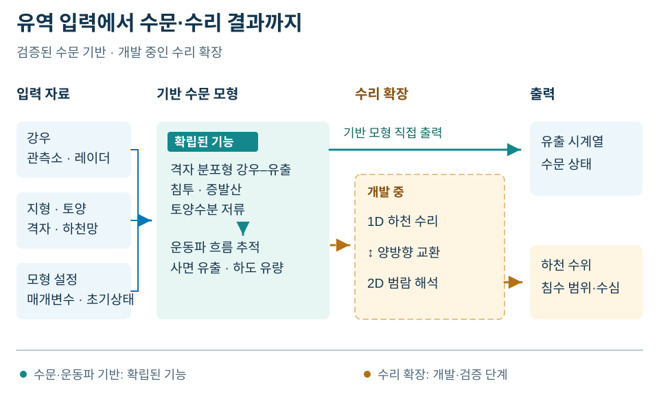
K-DRUM은 격자별 저장상태를 시간에 따라 갱신하며 강우, 침투, 증발산과 유출을 연결합니다. 초기상태와 연속 입력자료는 결과 해석의 주요 조건입니다.
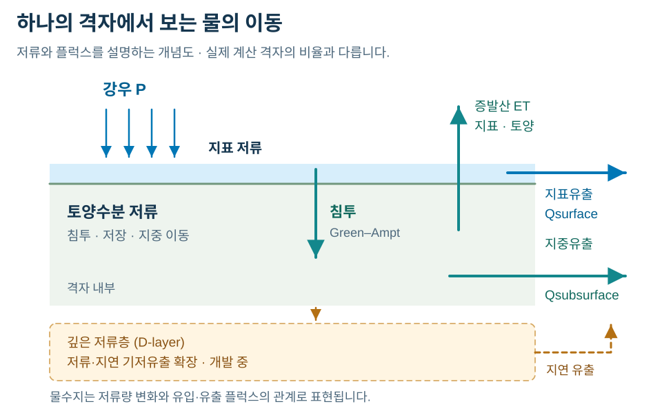
공간 강우 입력은 시간 간격과 단위를 맞춘 관측소 또는 격자 자료를 계산격자에 배분한 값입니다. 결측과 공간배분 오차는 유출 계산에 영향을 줍니다.
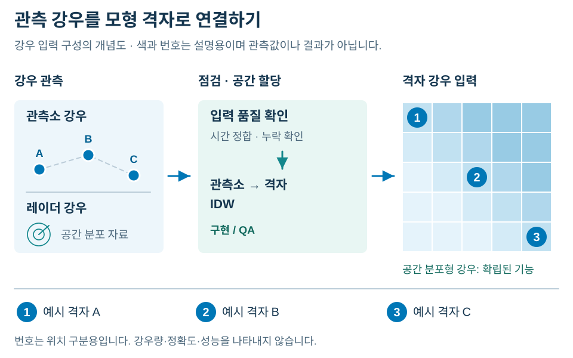
강우·침투·증발산과 유출의 연결을 보여주는 개념도입니다. 실제 계산 결과가 아니며, D층은 개발 중인 기능입니다.

목차에서 기능을 선택해 활용 목적, 그림과 확인사항을 살펴보세요.
K-DRUM은 관측소·레이더·격자 강우를 계산격자에 공간적으로 적용합니다.
강우가 유역 내 어디에 집중되는지 반영할 때 사용합니다. 유출 계산에 들어가는 격자별 강우의 공간분포를 이해할 수 있습니다.

K-DRUM의 공간 강우 입력은 관측소 시계열 또는 레이더·격자 강우장을 계산격자의 강우로 연결합니다. 강우의 공간적 차이가 격자별 유출 계산에 반영되며, 입력자료의 시간 간격과 공간 배분은 강우장 구성의 기준입니다.
관측소·레이더·격자 자료의 시간 간격, 단위와 계산 영역이 일치하는지 확인합니다.
공간 강우 입력은 공개 레이더·격자 강우 적용 연구로 뒷받침되는 확립된 기능입니다.
K-DRUM의 강우 입력은 관측소와 계산격자를 연결하는 복수의 공간배분 경로를 제공합니다.
관측소 강우를 격자로 배분할 때 Thiessen과 IDW 경로를 검토합니다. 배분 방법에 따라 달라지는 격자 강우를 비교하는 출발점입니다.
Thiessen과 IDW는 강우관측소 자료를 계산격자에 배분하는 서로 다른 경로입니다. K-DRUM은 관측소에서 격자로 산정된 강우값을 유출 계산의 입력으로 사용하며, 두 경로의 결과정합성은 강우 입력 QA의 대상입니다.
동일 관측기간과 관측소 구성을 사용해 배분 결과를 비교하고 입력 QA를 확인합니다.
Thiessen·IDW 관측소-격자 배분 경로는 현재 Core에 구현되어 있으며 회귀 QA 대상입니다.
고도보정 IDW 입력경로는 강우 공간화와 품질검사를 결합합니다.
고도 차이와 강우자료 품질을 함께 살펴볼 때 사용합니다. 보정된 공간 강우와 자료 점검 결과를 구분해 해석할 수 있습니다.
고도보정 IDW는 강우 공간배분에 고도보정과 자료 품질검사를 결합한 입력 처리 경로입니다. 처리 결과는 격자 강우 입력으로 연결되며, 품질검사 결과와 공간화 결과는 강우자료의 상태를 설명하는 서로 다른 정보입니다.
고도보정 전제와 원자료의 결측·품질 문제를 확인합니다. 점검을 통과한 자료도 관측 자체의 불확실성은 남습니다.
고도보정 IDW와 강우 QC는 현재 강우 입력경로에 구현된 품질평가 기능입니다.
실행 리포트는 관측·예측·결측 시간수를 요약하여 강우자료 상태를 제공합니다.
모의기간의 강우자료가 충분한지 판단할 때 사용합니다. 관측·예측·결측 시간수를 통해 자료 구성이 결과 해석에 미치는 영향을 살펴볼 수 있습니다.
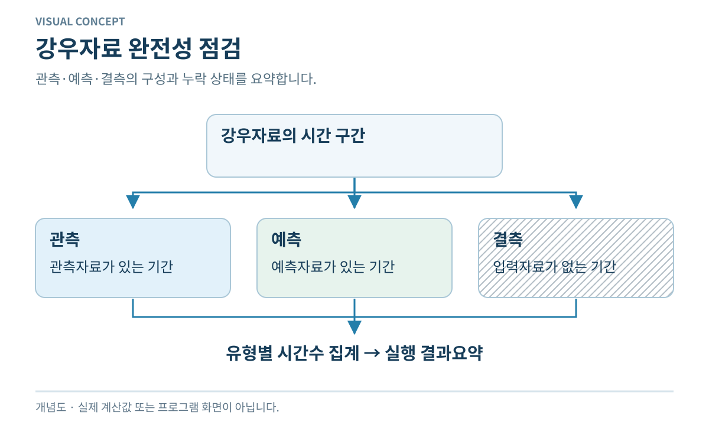
강우 완전성 평가는 실행에 연결된 강우자료의 관측·예측·결측 기간을 집계합니다. 실행 리포트에 제공되는 시간수 요약은 자료의 구성과 누락 상태를 나타내며, 결측 강우를 복원한 값이나 유출 정확도 지표는 아닙니다.
결측 시간수가 0인지, 예측자료가 어느 기간에 포함되는지 확인합니다. 이 집계는 결측 강우를 채워주지 않습니다.
강우 완전성 요약은 현재 실행 리포팅에 연결된 구현·QA 기능입니다.
입력 사전점검은 공간·시간·연결성·범위 오류를 실행 전에 줄이기 위해 확장 중인 점검 체계입니다.
계산 시작 전에 고쳐야 할 입력 문제를 찾는 데 활용합니다. 공간·시간·연결성 점검 결과로 실행 준비 상태를 판단합니다.
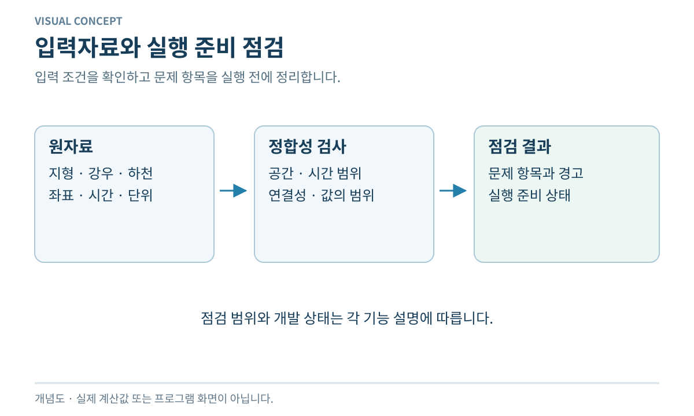
입력 사전점검은 모의 전에 입력자료의 공간·시간 범위, 연결성과 값의 범위를 검사하는 개발기능입니다. 검사 결과는 입력 정합성과 실행 준비 상태를 판단하는 자료이며, 수치모의 결과의 정확도를 검증하는 단계와 구분됩니다.
점검 대상과 오류·경고를 구분하고 수정 후 재확인합니다. 실행 준비 점검과 모의 결과 검증은 별도입니다.
입력 사전점검은 Core와 InputStudio의 정합성 검사 통합을 강화하는 개발 단계입니다.
강우가 지표유출과 토양침투로 분배되는 핵심 침투과정입니다.
강우 중 토양으로 들어가는 물과 지표유출로 이어지는 초과량을 구분할 때 활용합니다. 토양 침투가 유출 생성에 어떤 역할을 하는지 이해할 수 있습니다.

K-DRUM은 Green-Ampt 침투과정으로 강우의 토양 유입과 초과강우를 구분합니다. 습윤전선에 따른 침투 계산은 토양으로 전달되는 물과 지표유출에 기여하는 초과량을 연결하며, 이후 유출 전달 계산의 기초가 됩니다.
토양 특성과 초기 수분상태를 함께 살펴봅니다. 침투량과 하류 도달 유량은 서로 다른 계산 단계의 양입니다.
강우강도와 초기 토양수분·투수특성에 따라 침투량과 초과강우가 달라집니다. 침투한 물은 토양저류에, 초과강우는 지표유출에 반영됩니다.
수문 개념도 모아보기 →Green-Ampt 침투는 공개 K-DRUM 연구에 제시된 확립된 침투 기능입니다.
K-DRUM은 토양층 저장과 지표·지표하 유출을 격자별로 계산하고 유출을 하류로 전달합니다.
강우에 대한 빠른 지표 반응과 토양층을 통한 유출을 함께 이해할 때 활용합니다. 각 경로의 물이 하천 유입으로 이어지는 관계를 알 수 있습니다.

지표·지표하 유출 과정은 격자 내 토양층 저장과 물의 유출 경로를 연결합니다. K-DRUM은 격자별 저장과 유출을 계산하고 생성된 유출을 하류로 전달하여 하천 유입을 구성합니다.
토양 저장 변화와 유출 전달을 함께 해석합니다. 격자에서 생성된 유출을 하류 지점 유량과 바로 동일시하지 않습니다.
지표 흐름과 토양층 흐름은 경사·저류상태에 따라 서로 다른 속도로 하류에 전달됩니다. 유출 생성과 이후의 하도 추적은 구분하여 해석합니다.
수문 개념도 모아보기 →지표·지표하 유출은 기존 K-DRUM 모형 계열의 확립된 분포형 수문 기능입니다.
K-DRUM의 연속모의는 사상 간 저장상태를 이어가며 계절·장기 물수지와 유출을 계산합니다.
여러 강우사상과 건조기간을 연속해서 해석할 때 활용합니다. 계절별 유출과 물수지에 이전 저장상태가 미치는 영향을 살펴볼 수 있습니다.

연속·장기모의는 개별 강우사상 사이에도 이전 계산의 저장상태를 다음 시점으로 이어갑니다. 시간에 따른 상태 갱신을 통해 계절·장기 유출과 물수지를 구성하며, 저장상태의 연속성이 사상별 독립 계산과 구별되는 특성입니다.
연속 입력기간과 초기상태를 확인하고, 계절별 물수지와 감수부를 함께 검토합니다.
연속·장기모의는 공개 장기 유역유출 적용 연구로 뒷받침되는 확립된 기능입니다.
증발산 계산은 증발산 수요를 토양층 저장과 뿌리분포에 연결하여 연속 물수지를 구성합니다.
강우가 적은 기간의 토양수분 감소와 장기 물수지를 해석할 때 활용합니다. 증발산에 따른 저장량 변화를 이해할 수 있습니다.

증발산 계산은 기상·토양 조건에 따른 증발산 수요를 토양층 저장과 뿌리분포에 연결합니다. 증발산에 따른 저장량 변화는 이후 시점의 토양수분 상태와 연속 물수지에 반영됩니다.
기상 입력과 토양·식생 조건을 함께 확인합니다. 증발산 수요와 토양에 저장된 물의 관계를 살펴봅니다.
토지피복·식생·계절별 LAI와 토양수분 상태에 따라 증발산과 후속 유출응답이 달라집니다.
수문 개념도 모아보기 →증발산·토양수분은 확립된 연속 수문 기능이며 계산 QA의 현대화가 진행 중입니다.
K-DRUM의 적설·융설 과정은 적설저장과 융설을 장기 수문상태에 연결합니다.
눈으로 저장된 강수가 나중에 유출에 기여하는 유역을 해석할 때 활용합니다. 적설 축적과 융설 시점을 구분해 장기 유출을 읽을 수 있습니다.
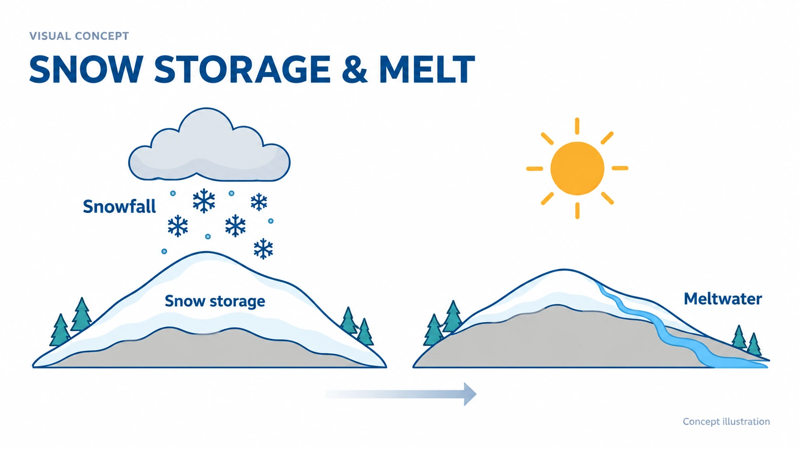
적설·융설 과정은 강설과 기온을 적설저장의 축적 및 융설에 연결합니다. 융설수의 유출 기여와 남은 적설저장이 장기 유역수문 상태에 반영되므로, 강설 시점과 유출 기여 시점을 구분하여 표현합니다.
강설·기온 입력과 대상 유역의 기상 조건을 확인합니다. 강설 발생 시점과 융설수 유출 시점을 구분합니다.
적설·융설은 공개 장기 융설 적용 연구로 뒷받침되는 확립된 기능입니다.
워밍업은 목표지점 유량과 함께 초기 토양·유출 상태를 반복 조정하고 오차를 진단하는 기능입니다.
본 모의의 시작 상태가 결과를 좌우하는지 살펴볼 때 활용합니다. 초기상태 조정과 목표지점 오차·수렴 진단을 함께 확인할 수 있습니다.
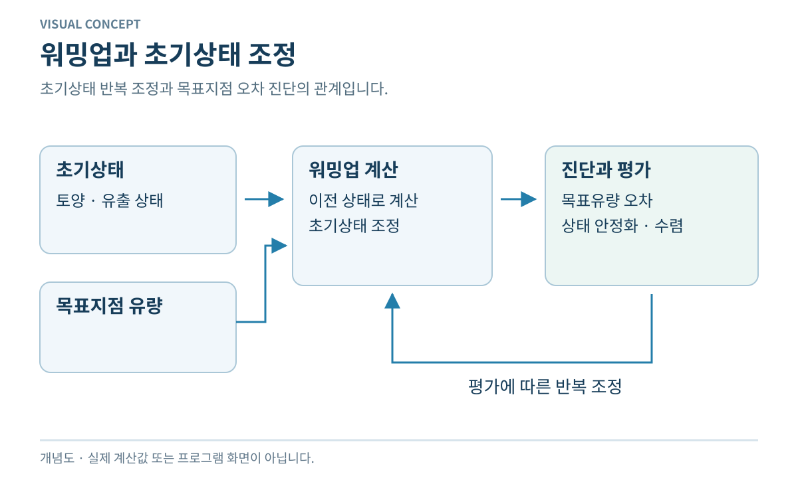
워밍업은 초기 토양·유출 상태를 반복 조정하고 목표지점 유량과의 오차를 진단하는 초기화 과정입니다. 반복 계산의 결과는 초기상태의 안정화와 수렴품질 평가에 사용되며, 수렴 특성은 유역과 초기 조건에 따라 달라집니다.
반복이 끝났다는 사실뿐 아니라 목표유량 오차와 상태 변화가 충분히 안정되는지 검토합니다.
워밍업은 현재 Core에 통합된 구현·QA 기능이며 초기상태 수렴품질은 유역별 평가 대상입니다.
HotStart는 저장된 상태에서 계산을 이어가며 체크포인트와 상태 일치성을 관리합니다.
긴 계산을 나누거나 저장된 상태에서 모의를 이어갈 때 활용합니다. 중단 전 상태와 이후 계산을 연결할 수 있습니다.

HotStart는 체크포인트에 저장된 모형 상태를 읽어 계산을 재개하는 상태관리 기능입니다. 저장 상태와 재시작 조건의 일치성을 관리하여 중단 전 계산 상태를 이후 모의에 연결합니다. 적용 범위는 상태 저장·복원과 계산 재시작이며, 초기상태를 반복 안정화하는 워밍업과 구분됩니다.
체크포인트의 격자·상태·시간과 재시작 조건이 맞는지 확인합니다. 초기상태의 적절성은 워밍업 등으로 별도 검토합니다.
HotStart는 현재 Core의 체크포인트·상태 재시작 구현·QA 기능입니다.
깊은 저장층의 수위·저장량과 지연복류·손실을 이용해 저유량 꼬리를 표현하는 개발기능입니다.
강우 종료 후의 장기 감수부와 저유량을 설명하는 심부저장 기여를 검토할 때 활용하는 개발기능입니다.
D층 확장은 심부 저장층의 수위와 저장량을 지연복류 및 손실에 연결합니다. 느리게 방출되는 물의 기저유출 기여를 통해 장기 감수부와 저유량 응답을 표현하는 개발 경로입니다.
심부 저장량, 지연 방출과 손실의 관계를 확인하고 관측 감수부와 비교합니다. 완전한 지하수유동 해석과는 구분합니다.
심부에 저장된 물의 느린 방출로 감수부와 저유량을 표현하는 개발 기능입니다. 전체 지하수 유동장을 해석하는 지하수모형과는 구분됩니다.
수문 개념도 모아보기 →D층·지연 기저유출은 현재 장기 저장과 기저유출 표현을 확장하는 개발기능입니다.
사면 유출과 하도 흐름에는 각각의 경사 표현이 적용됩니다.
사면과 하도의 지형 조건을 구분해 유출 전달을 구성할 때 활용합니다. 서로 다른 흐름 경로에 어떤 경사가 적용되는지 알 수 있습니다.

K-DRUM은 사면 유출 경로와 하도 흐름 경로에 서로 다른 경사 변수를 적용합니다. 각 지형 경사가 해당 흐름 계산에 연결되므로 사면경사와 하도경사를 입력·출력의 순서가 아닌 별도의 지형 조건으로 표현합니다.
사면경사와 하도경사의 산정 기준·방향·단위를 각각 확인합니다. 하나의 경사를 모든 경로에 일괄 적용하지 않도록 검토합니다.
사면·하도 경사의 별도 적용은 현재 유출 전달 경로에 구현된 QA 대상 기능입니다.
사면 운동파 추적은 격자 사면에서 생성된 유출을 하류 격자에 전달합니다.
격자 사면에서 생긴 유출이 하천에 도달하는 과정을 해석할 때 활용합니다. 유출의 생성과 이동을 구분해 볼 수 있습니다.
사면 운동파 추적은 격자 사면에서 생성된 유출이 하류 격자로 이동하는 과정을 계산합니다. 사면에서의 유출 생성과 생성된 물의 전달을 연결하며, 하도 내 유량을 전달하는 하도 운동파 추적과 계산 대상이 구분됩니다.
사면 연결과 경사·조도 등 전달 조건을 확인합니다. 하천 수위에 의한 복잡한 배수위 해석과 적용 범위를 구분합니다.
사면 운동파 추적은 공개 K-DRUM 연구에 제시된 확립된 유출 전달 기능입니다.
하도 운동파 추적은 유역에서 집수된 유량을 하도 길이·폭·경사·조도에 따라 계산합니다.
하도로 모인 유량과 측방유입이 하류로 전달되는 과정을 해석할 때 활용합니다. 지점별 유량 변화의 전달 관계를 이해할 수 있습니다.
하도 운동파 추적은 측방유입을 포함해 하도에 집수된 유량을 하류로 전달합니다. 하도 길이·폭·경사·조도는 유량추적의 지형·수리 조건이며, 결과는 하류 하도 유량으로 연결됩니다.
하도 길이·폭·경사·조도와 연결을 확인합니다. 동역학파에 의한 수위·유량 해석과 동일한 기능으로 보지 않습니다.
하도 운동파 추적은 기존 K-DRUM 하도 유량추적의 확립된 기반 기능입니다.
하천 침투 계산은 심부 저장층으로 이동 가능한 유량을 저장여유와 함께 제한합니다.
하천수 일부가 심부저장으로 이동할 때 하천과 D층 물수지가 어떻게 연결되는지 검토하는 개발기능입니다.

하천 침투 연계는 하천수가 D층으로 이동할 수 있는 양을 계산하는 개발기능입니다. 침투가능량과 심부 저장여유에 따른 제한을 함께 적용하며, 이동량은 하천과 D층 물수지의 연결 항목입니다.
침투가능량과 심부 저장여유의 제한을 함께 확인하고, 이동량이 두 영역의 물수지에 일관되게 반영되는지 살펴봅니다.
하천 침투·심부저장 연계는 D층 물수지와 연결되는 현재 개발기능입니다.
ChannelBed는 DEM만으로 부족한 저수로·하상 형상을 보완하는 1D/2D 수리 지형 개발기능입니다.
DEM에 수중 하상이나 저수로 형상이 충분하지 않을 때 수리해석용 지형을 보완하는 데 활용하는 개발도구입니다.

ChannelBed는 DEM과 하천 중심선 등을 바탕으로 부족한 하상·저수로 형상을 보완하는 지형 지원도구입니다. 산출물은 1D·2D 수리해석에 사용하는 지형·하상 자료이며, 수위·유량 계산 결과 자체는 아닙니다.
보완에 사용한 중심선·단면 등 자료와 높이 기준을 확인합니다. 보완 지형은 측량 원자료와 구분해 검토합니다.
ChannelBed는 재사용 가능한 지형·하상 작성도구로 개발 중입니다.
유역 물수지 평가는 강우·증발산·유출·저장량 변화와 내부 플럭스를 추적하여 폐합오차를 산정합니다.
계산에서 물의 유입·유출·저장 변화가 맞는지 확인할 때 활용합니다. 폐합오차로 물수지의 일관성을 점검할 수 있습니다.
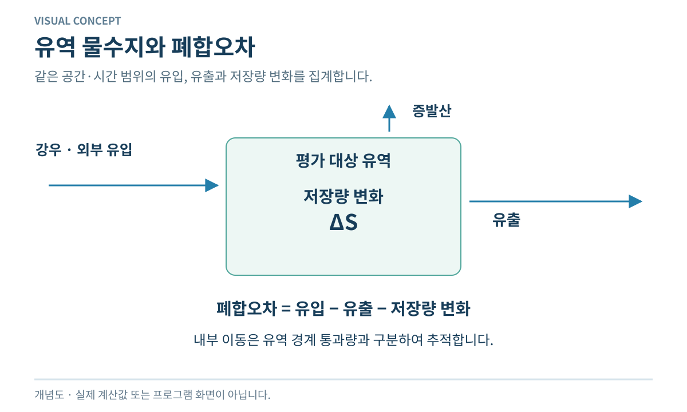
유역 물수지 평가는 같은 집계 범위의 강우·유입, 증발산·유출과 저장량 변화를 연결하여 폐합오차를 산정합니다. 내부 유량의 추적은 유역 내 이동과 유역 경계를 넘는 이동을 구별하는 근거이며, 폐합오차는 유량 관측 적합도와 다른 평가 항목입니다.
같은 기간과 영역, 같은 단위로 각 항을 집계합니다. 작은 폐합오차만으로 관측유량 재현성이 입증되지는 않습니다.
유역 물수지 평가는 현재 Core 실행 리포팅과 검증에 통합된 구현·QA 기능입니다.
1D-2D 교환 물수지 검사는 같은 교환유량을 두 영역에 반대 부호로 반영하여 연계 질량보존을 평가합니다.
하천에서 범람원으로 이동한 물이 두 계산 영역에 일관되게 반영되는지 확인하는 개발 검증 항목입니다.

1D-2D 교환 물수지는 동일한 교환유량을 하천과 범람원에 반대 부호로 반영하는 영역 간 회계를 평가합니다. 한 영역의 유출이 다른 영역의 유입으로 대응하는지가 평가 대상이며, 교환량 일관성은 전체 유역 물수지 검증과 구분됩니다.
동일 교환량이 반대 부호로 반영되는지 확인합니다. 교환량 일관성과 전체 유역의 물수지는 따로 평가합니다.
1D-2D 교환량 일관성은 통제된 개발 조건에서 검증되었으며 모든 유역의 물수지 인증을 뜻하지 않습니다.
통합 실행 리포트는 입력조건·실행모드·초기상태·물수지·경고·성능 정보를 제공합니다.
실행 결과를 다른 케이스와 비교하거나 문제 원인을 찾을 때 활용합니다. 입력조건·진단·물수지·경고·계산시간을 함께 읽을 수 있습니다.
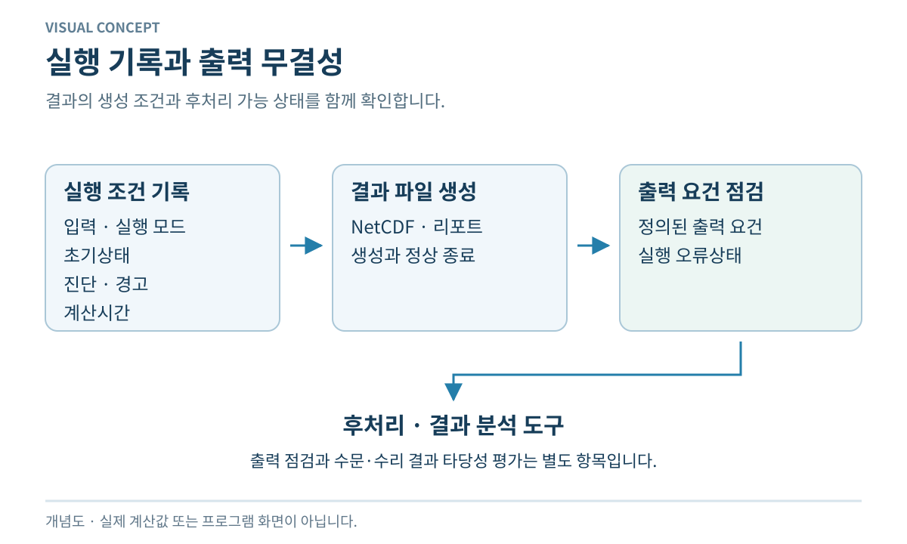
통합 실행 리포트는 입력조건, 실행모드, 초기상태와 계산 과정의 진단을 하나의 요약에 모읍니다. 물수지·경고·계산시간이 실행 조건과 함께 제공되어 결과의 생성 조건을 설명하며, 리포트 생성만으로 예측 정확도가 입증되지는 않습니다.
실행모드와 초기상태가 의도한 조건인지 먼저 확인한 뒤 경고와 물수지를 살펴봅니다.
통합 실행 리포트는 현재 실행정보와 진단을 제공하는 구현·QA 요약 기능입니다.
전체 유역 결과를 소유역 단위로 나눠 강우·유출·상태를 비교할 수 있는 리포팅 경로입니다.
전체 유역 결과만으로 지역별 차이를 설명하기 어려울 때 활용합니다. 소유역별 강우·유출·상태를 나누어 비교할 수 있습니다.

소유역 리포팅은 전체 유역의 강우·유출·상태 결과를 소유역 단위로 구분하여 제공합니다. 지점과 소유역 사이의 비교 자료를 구성하는 보고 기능이며, 보고 단위의 구분 자체가 매개변수 자동 보정을 수행하지는 않습니다.
소유역 경계와 평가 지점의 대응, 집계기간·단위를 확인합니다. 보고 단위 구분과 매개변수 보정은 별도입니다.
소유역 리포팅은 현재 성공한 실행에 대해 정의된 결과출력에 포함된 구현·QA 기능입니다.
목표지점 보정·최적화는 목표 격자의 관측유량과 여러 매개변수 조합을 비교하여 성능지표와 최적 케이스를 평가합니다.
목표지점의 관측유량을 더 잘 설명하는 매개변수 케이스를 검토하는 개발기능입니다. 여러 성능지표로 케이스 차이를 읽을 수 있습니다.
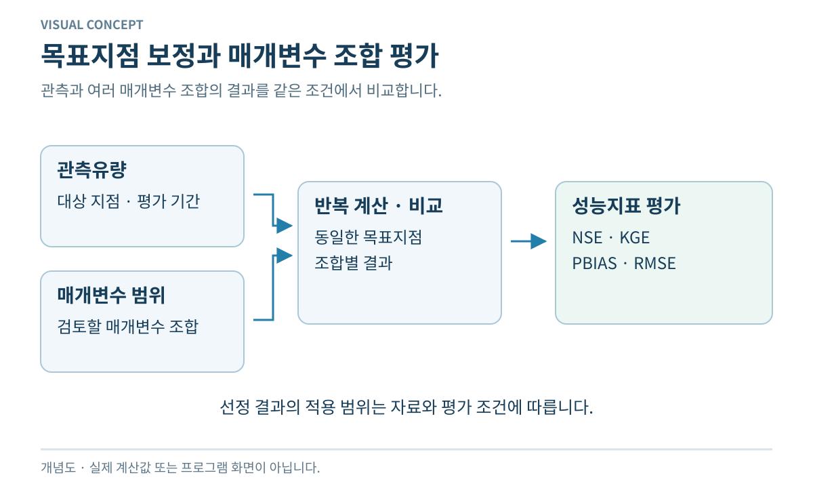
목표지점 보정은 관측유량과 매개변수 범위를 바탕으로 여러 계산 케이스를 비교합니다. NSE·KGE·PBIAS·RMSE 등 성능지표는 목표지점에서 케이스별 적합도를 평가하는 자료이며, 보정 결과의 적용 범위는 해당 자료와 평가 조건에 따릅니다.
관측 품질과 평가기간을 확인하고 첨두·시점·총량·감수부를 함께 검토합니다. 보정기간 외 자료로도 재평가합니다.
목표지점 보정·최적화는 GRID/OAT 계열 케이스 비교와 다수 성능지표를 제공하는 개발기능입니다.
소유역 보정은 소유역 리포트와 목표지점 최적화를 결합하여 유역별 보정 의사결정을 지원합니다.
어느 소유역의 진단을 목표지점 보정에 연결할지 검토할 때 활용합니다. 진단 → 보정 → 재평가의 의사결정 과정을 지원합니다.
소유역·목표지점 보정 지원은 소유역 리포트의 진단과 목표지점 최적화 결과를 연결합니다. 보정 전후 결과를 다시 평가하는 유역별 의사결정 자료를 제공하는 개발 경로이며, 모든 소유역에 대한 자동 매개변수 보정과는 구분됩니다.
소유역 보고 결과와 목표지점의 관계를 확인합니다. 모든 소유역의 매개변수를 자동으로 찾아주는 기능으로 해석하지 않습니다.
소유역 보정 지원은 개발 단계이며 자동 소유역별 매개변수 타게팅이 일반화된 상태는 아닙니다.
출력 무결성 검사는 실행 전 과정에서 파일 생성·닫기, 정의된 결과 요건, 오류상태를 평가합니다.
결과 파일을 후처리나 Viewer로 넘기기 전에 활용합니다. 파일 생성·종료와 정의된 출력 요건이 충족되는지 판단할 수 있습니다.
출력 무결성 검사는 파일 생성과 종료, 정의된 결과 요건 및 실행 오류상태를 다룹니다. 결과가 NetCDF·리포트·Viewer 후처리에 전달될 수 있는지를 평가하는 실행 QA이며, 파일 무결성과 수문·수리 결과의 타당성은 서로 다른 조건입니다.
오류상태와 필요한 결과항목을 확인합니다. 파일이 정상이라고 수문·수리 결과까지 타당한 것은 아닙니다.
출력 무결성·라이프사이클 검사는 NetCDF·리포트·Viewer 연계를 지원하는 구현·QA 기능입니다.
횡단면 기반 수위·유량과 분기·합류 하천망을 동역학파로 해석하는 개발트랙입니다.
분기·합류가 있는 하천망의 수위와 유량을 함께 검토하는 수리 개발기능입니다. 하천 구간 간 연결된 흐름을 살펴볼 수 있습니다.

1D 동역학파 하천망 해석은 하천망과 횡단면 자료를 이용하여 수위와 유량을 계산하는 수리 확장입니다. 분기·합류가 있는 하천망의 흐름을 계산 대상으로 하며, 확립된 하도 운동파 추적과 구분되는 개발 경로입니다.
하천망·단면·경계조건과 관측 수위·유량을 함께 검토합니다. 적용 유역의 신뢰성 평가는 별도로 필요합니다.
1D 동역학파 하천망은 신뢰성·통합·회귀 검증을 강화하는 개발 단계입니다.
하천망 연결점에서 질량보존과 수위·운동량 관계를 일관되게 다루는 개발기능입니다.
본류·지류의 합류 또는 흐름의 분기점에서 구간별 계산을 연결하는 개발기능입니다. 연결부의 흐름과 수리조건을 이해할 수 있습니다.
분기·합류 수리는 지류와 본류가 만나는 하천망 연결점의 흐름을 다룹니다. 연결부의 연속방정식과 수리조건을 일관되게 처리하여 각 하천 구간의 수위·유량 계산을 연결하는 개발기능입니다.
연결 방향과 연속조건을 확인하고 합류·분기 전후 구간을 함께 검토합니다.
분기·합류부의 연결 신뢰성과 수리 거동은 현재 하천망 개발·검증의 주요 대상입니다.
구조물 연계 기능은 게이트·월류 등 구조물 유량을 공통 입출력 체계를 통해 하천·2D 계산에 연결합니다.
수문·월류 등 구조물에 의한 유량 변화가 상·하류 계산에 미치는 영향을 검토하는 개발기능입니다.

수리구조물 연계는 수위와 구조물 제원을 이용해 게이트·월류 등의 유량을 계산하는 개발기능입니다. 구조물 유량은 공통 입출력 체계를 통해 상·하류 하천 또는 2D 영역 계산에 반영됩니다.
구조물 형식·제원·수위 조건과 적용하는 유량 관계를 확인합니다. 실제 구조물의 운영자료와 함께 검토해야 합니다.
수리구조물 유량과 공통 입출력 체계는 1D·2D 계산경로에서 통합 개발 중입니다.
댐 운영 계산은 수위·방류제약·환경유량·방류변화율 등을 이용한 운영규칙과 방류구성을 다룹니다.
유입과 운영조건에 따라 방류·저류가 어떻게 구성되는지 검토하는 개발기능입니다. 저수지와 하류의 연결 관계를 읽을 수 있습니다.

댐·저수지 운영 계산은 유입과 수위를 운영규칙 및 방류제약에 연결하여 방류와 저류를 구성합니다. 환경유량과 방류변화율 등은 운영 계산의 제약 항목이며, 실제 운영규칙과 제한자료는 공개 범위에 포함되지 않습니다.
대상 댐의 운영규칙·방류제약과 초기 저수상태를 별도로 확보하고 확인합니다. 공개 홈페이지는 실제 운영규칙을 제공하지 않습니다.
댐·저수지 운영은 개발 중이며 공개 저장소는 기능 개요만 제공하고 실제 운영규칙은 포함하지 않습니다.
댐 예측 운영은 예측 유입과 하류 제약을 이용한 사전방류·방류우선순위·하류 안전 평가를 지원하는 개발기능입니다.
예측 유입을 반영한 방류 대안과 하류영향을 비교하는 운영지원 개발기능입니다. 대안별 영향을 검토하는 데 활용합니다.

예측 운영지원은 예측 유입과 하류 제약조건을 함께 반영하여 사전방류와 하류영향을 평가하는 개발기능입니다. 예측정보를 반영한 방류 대안의 비교가 적용 범위이며, 실제 운영의 안전성이나 실시간 운영인증을 제시하는 기능은 아닙니다.
예측의 불확실성, 저수지 상태와 하류 제약을 함께 확인합니다. 모의 대안은 실제 운영 승인과 구분합니다.
예측·사전방류·하류제어는 운영 의사결정 지원 개발 단계이며 실시간 운영인증을 의미하지 않습니다.
댐망 유입·운영 시나리오·목적지표를 비교해 재운영 대안을 평가하는 개발기능입니다.
여러 댐의 운영 대안이나 재운영 조건을 같은 기준으로 비교하는 연구·평가용 개발기능입니다.
다중댐 시나리오 평가는 댐망 유입과 운영 대안을 목적지표에 따라 비교합니다. 재운영 연구를 위한 대안별 평가가 결과이며, 개별 댐의 방류 구성 계산과 구분하여 댐군 시나리오의 차이를 다룹니다.
같은 유입조건·평가기간·목적지표를 사용해 대안을 비교합니다. 개별 댐의 효과와 댐군 전체 효과를 구분합니다.
다중댐 운영·재운영은 댐망 시나리오 비교를 위한 연구·평가용 개발기능입니다.
1D-2D 연계는 동일한 교환경계에서 하천과 범람원 사이의 월류·복귀유량을 양방향으로 계산합니다.
하천에서 넘친 물이 범람원으로 이동하고 다시 돌아오는 관계를 검토할 때 활용합니다. 두 영역의 상호작용을 이해할 수 있습니다.
양방향 1D-2D 연계는 동일한 하천–범람원 경계에서 월류와 복귀유량을 계산합니다. 교환경계를 통한 물의 이동이 두 계산 영역을 연결하며, 양방향 교환의 작동 여부와 교환량 물수지의 일관성은 구분된 평가 항목입니다.
연결 경계·높이·수위와 교환량을 함께 확인합니다. 통제된 개발검증 결과와 실제 유역 적용성은 구분합니다.
양방향 1D-2D 교환은 통제된 개발검증에서 확인되었으며 모든 유역의 적용성이나 생산인증을 뜻하지 않습니다.
효율적인 범람 확산을 위해 수심·단위폭 유량을 격자에서 계산하는 주 2D 개발경로입니다.
범람원이 어디로 확산되고 어느 곳이 깊게 잠기는지 검토하는 2D 개발경로입니다. 침수심·유속 등 공간 결과를 해석하는 기반입니다.

Local Inertia 경로는 지형과 경계조건을 바탕으로 격자별 수심과 단위폭 유량을 계산하는 2D 수리 개발기능입니다. 범람 확산의 효율적인 계산을 주목적으로 하며, 침수심·유속 등 범람원 결과를 구성합니다.
지형·격자·경계조건과 계산 설정을 확인하고 대상 흐름에 대한 적용성을 검토합니다.
2D Local Inertia는 주 범람원 개발경로로 통합·검증이 진행 중입니다.
급변류 등 더 완전한 운동량 표현이 필요한 구간을 위한 특수 2D 해석경로입니다.
급변류 등 운동량을 더 완전하게 표현할 필요가 있는 관심 영역을 검토하는 특수 개발 옵션입니다.
Full SWE는 급변류 등 운동량을 더 완전하게 표현할 필요가 있는 구간을 위한 2D 개발 옵션입니다. 관심 영역에서 천수방정식 해석을 통해 유속과 수면을 계산하는 특수 경로이며, 모든 경우의 기본 해석경로로 제시되지 않습니다.
기본 Local Inertia 경로와 목적·설정·검증 범위를 구분합니다. 더 복잡한 해석이 모든 조건에서 더 정확하다는 뜻은 아닙니다.
Full SWE는 기본 생산경로로 공표되지 않은 특수 개발 옵션입니다.
다해상도 2D 계산은 관심구간에 더 촘촘한 격자·Patch를 적용하여 정확도와 계산비용을 조정합니다.
전체 영역의 계산비용을 고려하면서 관심구간을 세밀하게 표현할 때 검토하는 개발기능입니다.
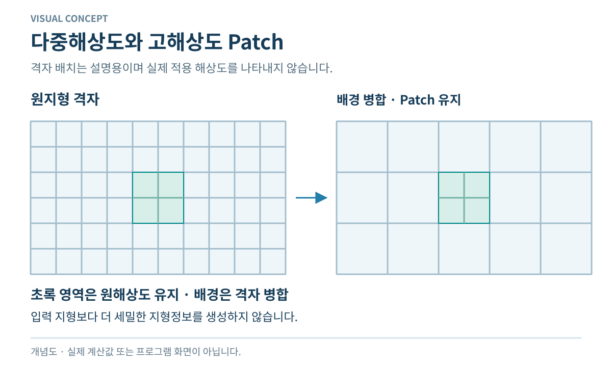
다중해상도 2D 해석은 기본격자와 관심구간의 고해상도 Patch를 함께 구성합니다. 국부 지형·흐름의 세부 표현과 계산비용 사이의 조정을 위한 개발기능이며, 격자 세분화 자체가 결과 정확도를 보증하지는 않습니다.
기본격자와 Patch의 연결, 경계와 결과 일관성을 확인합니다. 격자를 세분화하는 효과는 원지형 자료와 함께 평가합니다.
다중해상도·Patch 2D는 국부 고해상도 수리영역을 구성하는 개발 단계입니다.
직접강우·배수·구조물·입자/추적자를 범람원 해석과 함께 다루는 통합 확장기능입니다.
범람원 흐름에 직접강우·배수·구조물·추적자 영향을 함께 검토하는 통합 개발기능입니다.
2D 확장은 범람원 흐름에 직접강우·배수·구조물 작용과 입자·물질추적을 결합합니다. 외력과 구조물의 상호작용 및 흐름장 분석 레이어가 적용 대상이며, 구성요소별 개발·검증 범위가 각각 적용됩니다.
사용할 구성요소의 지원·검증 범위를 각각 확인합니다. 모든 요소가 모든 설정에서 동일하게 지원된다고 가정하지 않습니다.
2D 강우·배수·구조물·추적자 연계는 구성요소별 검증범위를 갖는 통합 개발기능입니다.
사면 경사·유속·토양조건을 이용해 침식·운반·퇴적을 계산하는 연구기능입니다.
사면에서 발생한 유사가 이동하거나 퇴적되는 경로를 검토하는 연구기능입니다. 물 유출과 유사유출을 구분해 볼 수 있습니다.

사면 유사 연구기능은 경사·유속·토양조건을 침식원과 운반능에 연결하여 침식·운반·퇴적을 계산합니다. 사면에서 발생해 이동하는 유사가 계산 대상이며, 물의 유출량 계산과 구분하여 유사유출을 표현합니다.
침식원·토양 조건과 운반능 가정을 확인하고 유사 관련 자료로 별도 평가합니다.
사면 유사·침식·퇴적 계산경로는 연구기능이며 별도 공개 검증문서가 아직 필요합니다.
하천 유사이송 연구기능은 하도 경사·유량·단면과 운반능을 이용하여 유사의 이송·퇴적을 계산합니다.
상류에서 유입한 유사가 하천 구간을 따라 이동·퇴적되는 양상을 검토하는 연구기능입니다.
하천 유사이송은 유입 유사와 하도 경사·유량·횡단면에 따른 운반능을 이용하는 연구기능입니다. 하천 구간을 따라 이동하거나 퇴적되는 유사가 결과이며, 사면에서의 유사 생성과는 계산 영역이 다릅니다.
상류 유사 입력과 하도 조건·운반능을 확인합니다. 사면의 유사 생성량과 하천 이송량을 구분합니다.
하천 유사이송·퇴적은 적용 조건과 범위에 대한 명시적 평가를 전제로 하는 연구기능입니다.
염료·보존성 추적자 연구기능은 하천 구간의 저장량·상하류 유량·주입질량을 이용하여 농도와 질량이동을 계산합니다.
보존성 물질이 물의 흐름을 따라 언제·어디로 이동하는지 검토하는 연구기능입니다. 농도와 질량 이동을 해석합니다.

보존성 추적자는 주입질량, 하천 구간의 저장량과 상·하류 유량을 이용하여 농도와 질량의 이동을 계산합니다. 결과 농도곡선은 주입된 물질의 이동을 설명하며, 침식·퇴적이나 반응성 수질과정과는 다른 연구 대상입니다.
주입질량·시점·유량과 질량보존을 확인합니다. 반응·분해가 포함된 일반 수질예측과 구분합니다.
염료·보존성 추적자는 워밍업 외 하천 계산경로에 존재하는 연구 수송 기능입니다.
질소·인·BOD 등 역사적 수질 계산코드는 남아 있으나 현재 빌드에서는 비활성입니다.
현재 사용할 수 있는 수질계산의 범위를 확인하는 항목입니다. 질소·인·BOD 등의 수질 과정 모듈은 비활성 상태이며 재개발 후보입니다.
현재 사용 가능한 수질 결과로 오인할 수 있어 예시 결과 그림을 제공하지 않습니다.
수질 과정 모듈은 질소·인·BOD 등 과거 수질계산 코드의 존속 상태를 설명하는 항목입니다. 현재 활성 빌드에서는 비활성이므로 사용 가능한 수질 계산이나 결과출력을 제공하는 기능으로 제시되지 않으며, 재개발 시 재설계와 검증이 필요한 후보입니다.
활성 수질 계산이나 결과출력을 기대하지 않도록 배포본의 기능 범위를 확인합니다. 보존성 추적자와도 구분합니다.
수질 과정 모듈은 현재 비활성이며 생산기능에 포함되지 않는 재개발 후보입니다.
K-DRUM은 단일·공유메모리·분산메모리 실행경로를 유지하며 결과정합성과 병렬효율을 검증합니다.
큰 계산의 실행시간과 계산 자원 사용을 검토할 때 활용합니다. 단일 실행·OpenMP·MPI의 역할을 구분할 수 있습니다.

K-DRUM의 실행 체계는 단일 실행과 OpenMP 공유메모리, MPI 분산메모리 경로를 포함합니다. 동일 입력에 대한 결과정합성과 병렬효율은 실행경로의 평가 항목이며, 공개 MPI 연구계보와 현재 실행 체계의 현대화 상태는 구분됩니다.
같은 입력에서 결과정합성과 실행시간을 함께 비교합니다. 코어 수 증가만으로 같은 비율의 속도 향상을 기대하지 않습니다.
MPI 병렬계산은 공개 연구계보가 있으며 현재 단일·OpenMP·MPI 정합성은 현대화·QA 대상입니다.
NetCDF 통합출력은 수문·수리 결과를 공통 시간·좌표·변수 구조로 구성하여 Viewer와 후처리에 전달합니다.
계산 결과를 Viewer나 후처리 도구에서 읽을 수 있도록 시간·좌표·변수 구조를 이해할 때 활용합니다.
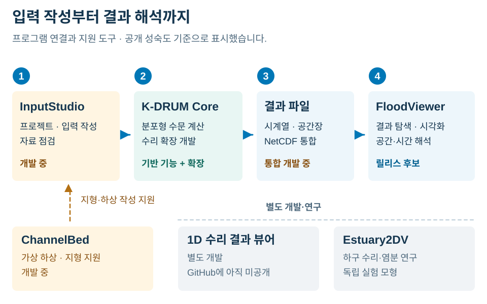
NetCDF 통합출력은 수문·수리 계산상태를 공통 시간·좌표·변수 구조의 결과자료로 구성합니다. 저장된 자료는 Viewer와 후처리 도구의 입력이며, 출력 형식의 표준화와 해당 결과를 생성한 계산 기능의 개발 상태는 별도로 구분됩니다.
파일에 포함된 변수·단위·시간·좌표와 후처리 도구의 호환성을 확인합니다. 포함 변수는 계산 기능과 설정에 따릅니다.
NetCDF 통합출력은 결과 저장 구조의 표준화와 Viewer 연계가 진행 중인 개발기능입니다.
공간지도·시계열·침수심·유속 등 K-DRUM 결과를 통합 분석하는 Viewer입니다.
계산된 공간분포와 시계열을 함께 살펴볼 때 활용하는 결과 분석 프로그램입니다. 침수심·유속 등 출력의 위치와 시간 변화를 읽습니다.
FloodViewer는 NetCDF 결과를 지도와 시계열로 구성하여 공간분포·침수심·유속 등을 분석하는 프로그램입니다. 입력은 K-DRUM 계산 결과이며, 화면의 비교·분석 기능과 결과를 생성하는 수문·수리 계산 기능은 역할이 다릅니다.
입력 결과의 좌표·시간·변수와 계산 기능의 개발 상태를 확인합니다. 뷰어의 표시 기능은 계산 결과의 검증을 대신하지 않습니다.
FloodViewer의 공개 성숙도는 Release Candidate이며 최종 공개 릴리스로 제시되지 않습니다.
InputStudio는 지형·강우·하천·단면·구조물·시나리오의 프로젝트 단위 작성과 QA를 지원하는 개발도구입니다.
여러 원자료를 하나의 모의 프로젝트 입력으로 정리하고 검사할 때 활용하는 개발도구입니다.
InputStudio는 지형·강우·하천·횡단면·구조물·모의조건을 프로젝트 단위로 작성하고 검사하는 개발도구입니다. 원자료를 엔진 입력으로 구성하는 역할이며, 계산 이후 결과를 분석하는 Viewer와는 입력·출력의 위치가 다릅니다.
원자료 출처와 좌표·시간 기준, 엔진 입력과의 일치 여부를 확인합니다. 결과를 읽는 Viewer와 역할을 구분합니다.
InputStudio는 프로젝트 입력 작성과 사전검사를 통합하는 개발 단계입니다.
종·연직(x-z) 하구 수동역학과 염분을 연구하는 별도 프로토타입입니다.
하구의 종·연직 방향 염분 분포와 성층을 연구할 때 검토하는 별도 실험 모형입니다. 유역 유출 해석과 연결되는 연구 맥락을 이해할 수 있습니다.

Estuary2DV는 상류와 조위 조건을 이용해 하구의 종·연직 방향 수동역학과 염분거동을 연구하는 별도 모형입니다. 염분·성층 등 x-z 단면의 연구 결과가 대상이며, K-DRUM Core의 확립된 유역 수문 기능과 구분됩니다.
상류 유입·조위·염분 조건과 연직 해상도를 확인합니다. Core의 확립된 기능이나 검증된 현장 예측으로 해석하지 않습니다.
Estuary2DV는 Core 생산기능과 분리된 실험적 하구 수동역학·염분 연구 프로토타입입니다.
1차원 하천수리 결과 뷰어는 종단면·횡단면과 수위·유량 시계열을 분석하는 별도 개발 프로그램입니다.
1D 하천수리 결과를 종단면·횡단면·시계열로 읽기 위한 별도 개발 프로그램입니다. 구간별 수위와 유량을 비교하는 목적입니다.
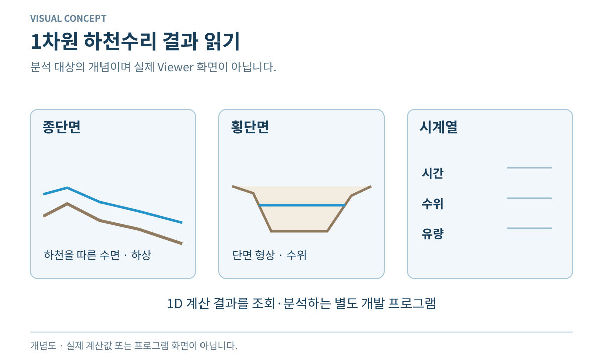
1차원 하천수리 결과 뷰어는 1D 계산 결과의 종단면·횡단면과 수위·유량 시계열을 조회·분석하는 별도 프로그램입니다. 하천 단면과 시계열 결과의 분석에 초점을 두며, 공개 저장소의 45개 기능 목록과 별도로 개발 상태를 표시합니다.
현재 미공개 상태와 결과파일 호환성을 확인합니다. 계산 엔진과 뷰어는 별도 역할입니다.
1차원 하천수리 결과 뷰어는 별도 개발 중이며 공개 GitHub 저장소에는 아직 게시되지 않았습니다.
결과의 시간·공간 특성을 설명하는 개념도이며 실제 유역 계산값은 아닙니다. 계산 완료, 물수지 일관성 및 관측 비교는 서로 다른 평가 항목입니다.
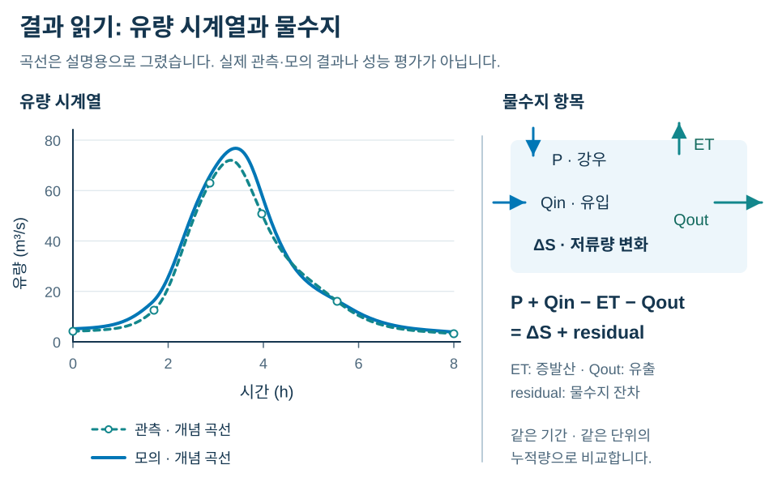
강우·토양수분·유출의 공간분포는 동일한 영역과 시간 범위에서 비교됩니다. 범람 관련 출력의 적용 범위는 해당 수리 기능의 개발 상태에 따릅니다.
수문곡선은 관측과 계산의 첨두, 발생 시점 및 감수부 특성을 비교하는 자료입니다. 비교 기준은 동일한 단위와 시간 간격입니다.
물수지 평가는 유입·유출·저장량 변화·손실의 정의와 집계 범위를 기준으로 합니다. 실행 성공만으로 물수지의 타당성이나 예측 정확도가 입증되지는 않습니다.
입력 작성, 계산, 출력 저장과 결과 분석은 프로그램별로 구분된 역할입니다. 각 프로그램의 공개 여부와 개발 상태는 Core의 확립된 수문 기능과 별도로 관리됩니다.
K-DRUM Core는 확립된 분포형 수문과 운동파 추적을 중심으로 구성됩니다. Core 내부의 수리·범람 확장에는 기능별 개발 상태가 적용되며, 모두 확립된 기능은 아닙니다.
InputStudio는 지형·강우·하천·단면·구조물·시나리오의 프로젝트 단위 작성과 QA를 지원하는 개발도구입니다.
InputStudio는 프로젝트 입력 작성과 사전검사를 통합하는 개발 단계입니다.
공간지도·시계열·침수심·유속 등 K-DRUM 결과를 통합 분석하는 Viewer입니다.
FloodViewer의 공개 성숙도는 Release Candidate이며 최종 공개 릴리스로 제시되지 않습니다.
ChannelBed는 DEM만으로 부족한 저수로·하상 형상을 보완하는 1D/2D 수리 지형 개발기능입니다.
ChannelBed는 재사용 가능한 지형·하상 작성도구로 개발 중입니다.
NetCDF 통합출력은 수문·수리 결과를 공통 시간·좌표·변수 구조로 구성하여 Viewer와 후처리에 전달합니다.
NetCDF 통합출력은 결과 저장 구조의 표준화와 Viewer 연계가 진행 중인 개발기능입니다.
종·연직(x-z) 하구 수동역학과 염분을 연구하는 별도 프로토타입입니다.
Estuary2DV는 Core 생산기능과 분리된 실험적 하구 수동역학·염분 연구 프로토타입입니다.
1차원 하천수리 결과 뷰어는 종단면·횡단면과 수위·유량 시계열을 분석하는 별도 개발 프로그램입니다.
1차원 하천수리 결과 뷰어는 별도 개발 중이며 공개 GitHub 저장소에는 아직 게시되지 않았습니다.
공개 연구는 대상 유역, 입력자료와 적용 범위에 따른 K-DRUM의 활용 사례를 제시합니다.
2012
강우의 시공간 분포를 반영한 유역 홍수유출 모의
남강 유역을 대상으로 태풍과 대류성 호우 조건에서 레이더 강우를 이용한 홍수유출 모의의 적용성을 살폈습니다.
레이더 강우를 계산격자에 배분하고, DEM·토지피복·토양도에서 추출한 GIS 수문자료를 입력했습니다. 침투와 지표·지표하 유출을 계산하고 운동파 기반으로 하천망을 따라 유량을 추적했습니다.
2012년 논문의 과거 호우사상 모의 연구입니다. 이 적용 사례가 현재 개발 중인 동역학파 하천망이나 2D 범람 기능의 검증을 뜻하지는 않습니다.
Development and application of GIS based K-DRUM for flood runoff simulation using radar rainfall ↗
2013
유역의 적설과 융설을 반영한 장기유출 모의
파키스탄 Kunhar강 유역을 대상으로 고도에 따른 기상 차이와 적설·융설을 고려한 장기유출 모의를 수행했습니다.
GIS 공간자료를 바탕으로 고도에 따른 기온·강우 입력을 구성하고, 눈의 축적과 융설을 포함해 장기 유량을 계산했습니다.
2013년 특정 산지 유역의 적용 연구입니다. 적설·융설은 공개 연구로 확인되는 기반 기능이며, 다른 유역에서의 적용에는 해당 유역의 기상자료와 검증조건이 필요합니다.
2017
강우 종료 후에도 지속되는 하천 유출의 연계 해석
2017년 학술발표는 장기 물순환과 갈수기 유출 해석을 위해 K-DRUM과 지하수유동모형 MODFLOW를 연계하는 방법을 제시했습니다.
K-DRUM에서 계산한 심부 침루량을 MODFLOW의 지하수 함양 입력으로 사용하고, MODFLOW의 기저유량을 K-DRUM 하천유출에 반영하는 연계 방안을 설명했습니다.
연계 방법과 향후 활용 방향을 제시한 발표자료입니다. 이 기록만으로 정확도 향상이나 현재 배포본의 연계 기능을 확정할 수 없습니다. 현재 D층·지연 기저유출 및 하천 침투 연계의 공개 상태는 ACTIVE DEVELOPMENT입니다.
K-DRUM의 공식 배포 자료와 이용 안내는 MyWater에서 제공됩니다.
{kind=link}
{kind=link}
{kind=link}
{kind=link}
{kind=link}
{kind=link}
{kind=link}
{kind=link}
{kind=link}
{kind=link}
{kind=link}
{kind=link}
{kind=link}
{kind=link}
{kind=link}
{kind=link}